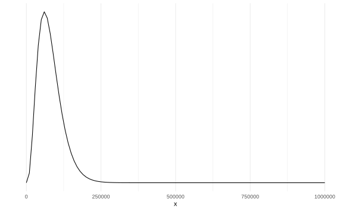
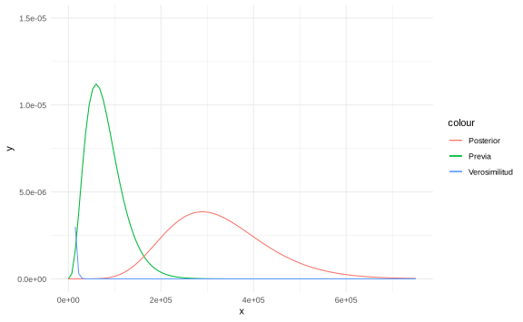
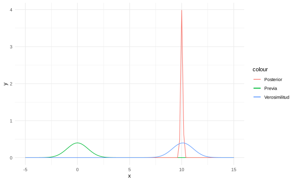
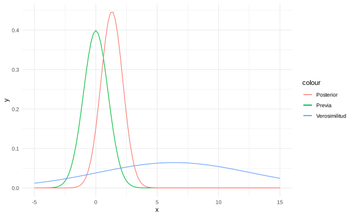
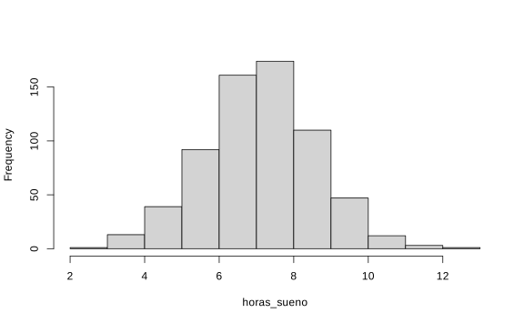

Capítulo 3 Densidades previas conjugadas y estimadores de Bayes
3.1 Distribución previa (distribución a priori)
Suponga que tenemos un modelo estadístico con parámetro \(\theta\). Su \(\theta\) es aleatorio entonces su densidad (antes de observar cualquier muestra) se llama densidad previa: \(\pi\).
Ejemplo: \(X_1,\dots, X_n \sim \text{Exp}(\theta)\) y \(\theta\) es aleatorio tal que \(\theta \sim \Gamma(\stackrel{\alpha}{1},\stackrel{\beta}{2})\) entonces
\[ \pi(\theta) = \dfrac{1}{\Gamma(\alpha)}\beta^\alpha\theta^{\alpha-1}e^{\beta\theta} = 2e^{-2\theta}, \quad \theta > 0\]
Ejemplo: Sea \(\theta\) la probabilidad de obtener cara al tirar una moneda.
En este caso antes de modelar exactamente el \(\theta\), lo importante es modelar el tipo de moneda. Es decir, supongamos que tenemos dos opciones
Moneda justa: \(\theta = \dfrac{1}{2}\) con probabilidad previa \(0.8\) (\(\pi(\frac{1}{2}) = 0.8\)).
Moneda con solo una cara: \(\theta = 1\) con probabilidad previa \(0.2\) (\(\pi(1) = 0.2\)).
En este ejemplo si tuviéramos 100 monedas con probabilidad previa \(\pi\) entonces 20 tendrían solo una cara y 80 serían monedas normales.
Notas:
\(\pi\) está definida en \(\Omega\) (espacio paramétrico).
\(\pi\) es definida antes de obtener la muestra.
Ejemplo (Componentes eléctricos) Supoga que se quiere conocer el tiempo de vida de cierto componente eléctrico. Sabemos que este tiempo se puede modelar con una distribución exponencial con parámetro \(\theta\) desconocido. Este parámetro asumimos que tiene una distribución previa Gamma.
Un experto en componentes eléctricos conoce mucho de su área y sabe que el parámetro \(\theta\) tiene las siguientes características:
\[\begin{equation*} \mathbb{E}[\theta] = 0.0002, \quad \sqrt{\text{Var}(\theta)} = 0.0001. \end{equation*}\]
Como sabemos que la previa \(\pi\) es Gamma, podemos deducir lo siguiente:
\[\begin{equation*} \mathbb{E}[\theta] = \dfrac{\alpha}{\beta}, \text{Var}(\theta) = \dfrac{\alpha}{\beta^2} \end{equation*}\]
\[\implies \begin{cases}\dfrac{\alpha}{\beta} = 2\times 10^{-4}\\\sqrt{\dfrac{\alpha}{\beta^2}} = 1 \times 10^{-4}\end{cases} \implies \beta = 20000, \alpha = 4\]
Notación:
\(X = (X_1,\dots, X_n)\): vector que contiene la muestra aleatoria.
Densidad conjunta de \(X\): \(f_\theta(x)\).
Densidad de \(X\) condicional en \(\theta\): \(f_n(x|\theta)\).
Supuesto: \(X\) viene de una muestra aleatoria si y solo si \(X\) es condicionalmente independiente dado \(\theta\).
Consecuencia: \[f_n(X|\theta) = f(X_1|\theta)\cdot f(X_2|\theta)\cdots f(X_n|\theta)\]
Ejemplo
Si \(X = (X_1,\dots, X_n)\) es una muestra tal que \(X_i\sim \text{Exp}(\theta)\),
\[\begin{align*} f_n(X|\theta) &= \begin{cases}\prod_{i=1}^n \theta e^{-\theta X_i} & \text{si } X_i>0\\ 0 & \text{si no} \end{cases} \\ &= \begin{cases}\theta^n e^{-\theta\sum_{i=1}^n X_i} & X_i > 0 \\ 0 & \text{si no}\end{cases} \end{align*}\]
3.2 Densidad posterior
Definición. Considere un modelo estadístico con parámetro \(\theta\) y muestra aleatoria \(X_1,\dots, X_n\). La densidad condicional de \(\theta\) dado \(X_1,\dots,X_n\) se llama densidad posterior: \(\pi(\theta|X)\)
Teorema. Bajo las condiciones anteriores:
\[\begin{equation*} \pi(\theta|X) = \dfrac{f(X_1|\theta)\cdots f(X_n|\theta)\pi(\theta)}{g_n(X)} \end{equation*}\]
para \(\theta \in \Omega\), donde \(g_n\) es una constante de normalización.
Prueba: \[\begin{align*} \pi(\theta|X) & = \dfrac{\pi(\theta,X)}{\text{marginal de X}} = \dfrac{\pi(\theta,X)}{\int \pi(\theta,X)\;d\theta}= \dfrac{P(X|\theta)\cdot \pi(\theta)}{\int \pi(\theta,X)\;d\theta}\\ & \dfrac{f_n(X|\theta)\cdot \pi(\theta)}{g_n(X)} = \dfrac{f(X_1|\theta)\cdots f(X_n|\theta)\pi(\theta)}{g_n(X)} \end{align*}\]
Del ejemplo anterior,
\[f_n(X|\theta) = \theta^n e^{-\theta y}, y = \sum{X_i} \text{ (estadístico})\] Numerador:
\[f_n(X|\theta)\pi(\theta) = \underbrace{\theta^n e^{-\theta y}}_{f_n(X|\theta)} \cdot \underbrace{\dfrac{200000^4}{3!}\theta^3e^{-20000\cdot\theta}}_{\pi(\theta)} = \dfrac{20000^4}{3!}\theta^{n+3}e^{(20000+y)\theta}\]
Denominador:
\[g_n(x) = \int_{0}^{+\infty}\theta^{n+3}e^{-(20000+y)\theta}\;d\theta = \dfrac{\Gamma(n+4)}{(20000+y)^{n+4}}\]
Entonces la posterior corresponde a \[\pi(\theta|X) = \dfrac{\theta^{n+3}e^{-(20000+y)\theta}}{\Gamma(n+4)} (20000+y)^{n+4}\] que es una \(\Gamma(n+4,20000+y)\).
Con 5 observaciones (horas): 2911, 3403, 3237, 3509, 3118. \[y = \sum_{i=1}^{5}X_i = 16478, \quad n= 5\] por lo que \(\theta|X \sim \Gamma(9,36178)\)

Es sensible al tamaño de la muestra (una muestra grande implica un efecto de la previa menor).
Hiperparámetros: parámetros de la previa o posterior.
3.3 Proceso de modelación de parámetros.
De ahora en adelante vamos a entender un modelo como el conjunto de los datos \(X_1, \ldots, X_n\), la función de densidad \(f\) y el parámetro de la densidad \(\theta\). Estos dos últimos resumen el comportamiento de los datos.
Ahora para identificar este modelo se hace por partes,
- La información previa \(\pi(\theta)\) es la información extra o basado en la experiencia que tengo del mdoelo.
- Los datos es la información observada. La función de densidad \(f\) filtra y mejora la información de la previa.
- La densidad posterior es la “mezcla” entre la información y los datos observados. Es una versión más informada de la distribución del parámetro.
3.4 Función de verosimilitud
Bajo el modelo estadístico anterior a \(f_n(X|\theta)\) se le llama verosimilitud o función de verosimilitud.
Observación. En el caso de una función de verosimilitud, el argumento es \(\theta\).
Ejemplo.
Sea \(\theta\) la proporción de aparatos defectuosos, con \(\theta \in [0,1]\) \[ X_i = \begin{cases} 0 & \text{falló} \\ 1 & \text{no falló} \end{cases}\]
\(\{X_i\}_{i=1}^n\) es una muestra aleatoria y \(X_i \sim Ber(\theta)\).
- Verosimilitud
\[ f_n(X|\theta) = \prod_{i=1}^n f(X_i|\theta) = \begin{cases}\theta^{\sum X_i}(1-\theta)^{n-\sum X_i} & X_i = 0,1\; \forall i\\ 0 & \text{si no}\end{cases}\]
Previa: \[\pi(\theta) = 1_{\{0\leq\theta\leq 1\}}\]
Posterior:
Por el teorema de Bayes, \[\begin{align*} \pi(\theta|X) \propto \theta^y (1-\theta)^{n-y}\cdot 1 \\ &= \theta^{\overbrace{y+1}^{\alpha}-1}(1-\theta)^{\overbrace{n-y+1}^{\beta}-1} &\implies \theta|X \sim \text{Beta}(y+1,n-y+1) \end{align*}\]
- Predicción.
Supuesto: los datos son secuenciales. Calculamos la distribución posterior secuencialmente:
\[\begin{align*} \pi(\theta|X_1) & \propto \pi(\theta) f(X_1|\theta)\\ \pi(\theta|X_1,X_2) &\propto \pi(\theta) f(X_1,X_2|\theta) \\ &= \pi(\theta) f(X_1|\theta) f(X_2|\theta) \text{ (por independencia condicional)} \\ & = \pi(\theta|X_1)f(X_2|\theta)\\ \vdots & \\ \pi(\theta|X_1,\dots,X_n) & \propto f(X_n|\theta)\pi(\theta|X_1,\dots, X_{n-1}) \end{align*}\]
Bajo independencia condicional no hay diferencia en la posterior si los datos son secuenciales.
Luego,
\[\begin{align*} g_n(X) & = \int_{\Omega} f(X_n|\theta) \pi(\theta|X_1,\dots, X_{n-1})\;d\theta\\ & = P(X_n|X_1,\dots,X_{n-1}) \text{ (Predicción para }X_n) \end{align*}\]
Continuando con el ejemplo de los artefactos, \(P(X_6>3000|X_1,X_2,X_3,X_4,X_5)\). Se necesita calcular \(f(X_6|X)\). Dado que \[ \pi(\theta|X) = 2.6\times 10^{36}\theta^8 e^{-36178\theta}\]
se tiene
\[ f(X_6|X) = 2.6\times 10^{36} \int_{0}^1 \underbrace{\theta e^{-\theta X_6}}_{\text{Densidad de } X_6}\theta^8 e^{-36178\theta}\;d\theta = \dfrac{9.55 \times 10^{41}}{(X_6+36178)^{10}}\]
Entonces,
\[ P(X_6>3000) = \int_{3000}^{\infty} \dfrac{9.55\times10^{41}}{(X_6+36178)^{10}}\; dX_6 = 0.4882\]
La vida media se calcula como \(\dfrac{1}{2} = P(X_6>u|X)\).
3.5 Familias conjugadas
Definición. Sea \(X_1,\dots, X_n\) i.i.d. condicional dado \(\theta\) con densidad \(f(X|\theta)\). Sea \(\psi\) la familia de posibles densidades previas sobre \(\Omega\). Si, sin importar los datos, la posterior pertenece a \(\psi\), entonces decimos que \(\psi\) es una familia conjugada de previas.
Ejemplos:
La familia Beta es familia conjugada para muestras según una Bernoulli.
La familia Gama es familia conjugada para muestras exponenciales.
Para el caso Poisson, si \(X_1,\dots,X_n\sim Poi(\lambda)\),entonces la familia Gamma es familia conjugada.
La función de densidad de una Poisson es \(P(X_i = k) = e^{-\lambda}\dfrac{\lambda^k}{k!}\). La verosimilitud corresponde a \[ f_n(X|\lambda) = \prod_{i=1}^{n}e^{-\lambda}\dfrac{\lambda^X_i}{X_i!} = \dfrac{e^{-n\lambda^y}}{\prod_{i=1}^n X_i}.\] La previa de \(\lambda\) está definida por \(\pi(\lambda)\propto\lambda^{\alpha-1}e^{-\beta\lambda}\). Por lo tanto, la posterior es \[ \pi(\lambda|X) \propto \lambda^{y+\alpha-1}e^{-(\beta+n)\lambda} \implies \lambda|X \sim \Gamma(y+\alpha,\beta+n)\]
- En el caso normal, si \(X_1,\dots,X_n\sim N(\theta,\sigma^2)\),entonces la familia normal es conjugada si \(\sigma^2\) es conocido.
Si \(\theta \sim N(\mu_0,V_0^2) \implies \theta|X \sim N(\mu_1, V_1^2)\) donde, \[\mu_1 = \dfrac{\sigma^2\mu_0 + nV_0^2 \bar X_n}{\sigma^2 + nV_0^2} = \dfrac{\sigma^2}{\sigma^2 + nV_0^2}\mu_0 + \dfrac{nV_0^2}{\sigma^2 + nV_0^2}\bar X_n\]
Combina de manera ponderada la previa y la de los datos.
Ejemplo
Considere una verosimilitud Poisson(\(\lambda\)) y una previa \[ \pi(\lambda) = \begin{cases}2e^{-2\lambda} & \lambda> 0 \\ 0 & \lambda \geq 0\end{cases} \quad \lambda \sim \Gamma(1,2)\]
Supongamos que es una muestra aleatoria de tamaño \(n\). ¿Cuál es el número de observciones para reducir la varianza, a lo sumo, a 0.01?
Por teorema de Bayes, la posterior \(\lambda|x \sim \Gamma(y+1,n+2)\). Luego, la varianza de la Gamma es \[\dfrac{\alpha}{\beta^2} = \dfrac{\sum x_i + 1}{(n+2)^2} \leq 0.01 \implies \dfrac{1}{(n+2)^2} \leq \dfrac{\sum x_i + 1}{(n+2)^2} \leq 0.01 \implies 100 \leq (n+2)^2 \implies n\geq 8\] Teorema. Si \(X_1,\dots,X_n \sim N(\theta, \sigma^2)\) con \(\sigma^2\) conocido y la previa es \(\theta \sim N(\mu_0,V_0^2)\), entonces \(\theta|X\sim N(\mu_1,V_1^2)\) donde \[ \mu_1 = \dfrac{\sigma^2\mu_0 + nV_0^2 \bar X_n}{\sigma^2 + nV_0^2}, \quad V_1^2 = \dfrac{\sigma^2V_0^2}{\sigma^2 + nV_0^2}\]
Prueba:
- Verosimilitud:
\[ f_n(X|\theta) \propto \exp\left[- \dfrac{1}{2\sigma^2} \sum_{i=1}^{n}(X_i\theta)^2\right]\] Luego, \[\begin{align*} \sum_{i=1}^n (X_i-\theta)^2 & = \sum_{i=1}^n (X_i-\bar X + \bar X - \theta)^2 \\ & = n(\bar X + \theta)^2 + \sum_{i=1}^n (X_i-\bar X)^2 + \underbrace{2 \sum_{i=1}^n (X_i-\bar X)(\bar X - \theta)}_{= 0 \text{ pues } \sum Xi = n\bar X)} \end{align*}\] Entonces \[ f_n(X|\theta) \propto \exp\left[-\dfrac{n}{2\sigma ^2}(\bar X - \theta )^2\right].\]
- Previa:
\[ \pi(\theta) \propto \exp\left[-\dfrac{1}{2V_0^2}(\theta - \mu_0)^2\right].\]
- Posterior:
\[ \pi(\theta|X) \propto \exp\left[-\dfrac{n}{2\sigma ^2}(\bar X - \theta )^2-\dfrac{1}{2V_0^2}(\theta - \mu_0)^2\right].\]
Con \(\mu_1\) y \(V_1^2\) definidos anteriormente, se puede comprobar la siguiente identidad:
\[-\dfrac{n}{\sigma ^2}(\bar X - \theta )^2-\dfrac{1}{V_0^2}(\theta - \mu_0)^2= \dfrac{1}{V_1^2}(\theta-\mu_1)^2 + \underbrace{\dfrac{n}{\sigma^2 + nV_0^2}(\bar X_n- \mu_0)^2}_{\text{Constante con respecto a }\theta}\] Por lo tanto, \[\pi(\theta|X) \propto \exp\left[-\dfrac{n}{2V_1^2}(\theta -\mu_1)^2\right]\]
Media posterior:
\[\mu_1 = \underbrace{\dfrac{\sigma^2}{\sigma^2 + nV_0^2}}_{W_1}\mu_0 + \underbrace{\dfrac{nV_0^2}{\sigma^2 + nV_0^2}}_{W_2} \bar X_n \]
Afirmaciones:
Si \(V_0^2\) y \(\sigma^2\) son fijos, entonces \(W_1 \xrightarrow[n\to \infty]{}0\) (la importancia de la media empírica crece conforme aumenta \(n\)).
Si \(V_0^2\) y \(n\) son fijos, entonces \(W_2 \xrightarrow[\sigma^2\to \infty]{}0\) (la importancia de la media empírica decrece conforme la muestra es menos precisa).
Si \(\sigma^2\) y \(n\) son fijos, entonces \(W_2 \xrightarrow[V_0^2\to \infty]{}1\) (la importancia de la media empírica crece conforma la previa es menos precisa).
Ejemplo (determinación de n)
Sean \(X_1,\dots, X_n \sim N(\theta,1)\) y \(\theta\sim N(\mu_0,4)\). Sabemos que \[V_1^2 = \dfrac{\sigma^2V_0^2}{\sigma^2 + nV_0^2}. \] Buscamos que \(V_1\leq 0.01\), entonces \[ \dfrac{4}{4n+1}\leq 0.01 \implies n\geq 99.75 \text{ (al menos 100 observaciones)}\]
3.6 Densidades previas impropias
Definición. Sea \(\pi\) una función positiva cuyo dominio está en \(\Omega\). Suponga que \(\int\pi(\theta)\;d\theta = \infty\). Entonces decimos que \(\pi\) es una densidad impropia.
Ejemplo: \(\theta \sim \text{Unif}(\mathbb{R})\), \(\lambda \sim \text{Unif}(0,\infty)\).
Una técnica para seleccionar distribuciones impropia es sustituir los hiperparámetros previos por 0.
Ejemplo:
Se presenta el número de soldados prusianos muertos por una patada de caballo (280 conteros, unidades de combate en 20 años).
| Unidades | Ocurrencias |
|---|---|
| 144 | 0 |
| 91 | 1 |
| 32 | 2 |
| 11 | 3 |
| 2 | 4 |
Muestra de Poisson: \(X_1 = 0, X_2 = 1, X_3 = 1,\dots, X_{280} = 0 \sim \text{Poi}(\lambda)\).
Previa: \(\lambda \sim \Gamma(\alpha, \beta)\).
Posterior: \(\lambda|X \sim \Gamma(y+\alpha, n+\beta) = \Gamma(196 + \alpha, 280 + \beta)\).
Sustituyendo, \(\alpha=\beta = 0\) \[\begin{align*} \pi(\lambda) &= \dfrac{1}{\Gamma(\alpha)}\beta^\alpha\lambda^{\alpha-1}e^{\beta\lambda} \\ \\ \propto \lambda^{\alpha-1}e^{-\lambda\beta} \\ &=\dfrac{1}{\lambda} \end{align*}\] donde \(\displaystyle\int_{0}^{\infty}\dfrac{1}{\lambda} d\lambda = \infty\).
Por teorema de Bayes, \[\theta|X \sim \Gamma(196,280)\]
3.7 Funciones de pérdida
Definición. Sean \(X_1,\dots, X_n\) datos observables cuyo modelo está indexado por \(\theta\in\Omega\). Un estimador de \(\theta\) es cualquier estadístico \(\delta(X_1,\dots, X_n)\).
Notación:
- Estimador \(\to \delta(X_1,\dots,X_n)\).
- Estimación o estimado: \(\delta(X_1,\dots,X_n)(\omega) = \delta(\overbrace{x_1,\dots,x_n}^{datos})\)
Definición. Una función de pérdida es una función de dos variables: \[ L(\theta,a), \quad \theta \in\Omega\] con \(a\) un número real.
Interpretación: es lo que pierde un analista cuando el parámetro es \(\theta\) y el estimador es \(a\).
Asuma que \(\theta\) tiene una previa. La pérdida esperada es \[ \mathbb{E}[L(\theta,a)] = \int_{\Omega}L(\theta, a) \pi(\theta)\;d\theta\] la cual es una función de \(a\), que a su vez es función de \(X_1,\dots,X_n\). Asuma que \(a\) se selecciona el minimizar esta esperanza. A ese estimador \(a = \delta^*(X_1,\dots, X_n)\) se le llama estimador bayesiano, si ponderamos los parámetros con respecto a la posterior.
\[\mathbb{E}[L(\theta, \delta^*)|X] = \int_{\Omega}L(\theta, a) \pi(\theta)\;d\theta = \min_a \mathbb{E}[L(\theta|a)X]. \]
3.7.1 Función de pérdida cuadrática
\[ L(\theta, a) = (\theta-a)^2\]
En el caso en que \(\theta\) es real y \(\mathbb{E}[\theta|X]\) es finita, entonces \[ \delta^*(X_1,\dots, X_n) = \mathbb{E}[\theta|X] \text{ cuando } L(\theta,a) = (\theta-a)^2. \]
Ejemplo: \(X_1,\dots, X_n \sim \text{Ber}(\theta)\), \(\theta \sim \text{Beta}(\alpha,\beta) \implies \theta|X \sim \text{Beta}(\alpha+y,\beta+n-y)\).
El estimador de \(\theta\) es \[ \delta^*(X_1,\dots, X_n) = \dfrac{\alpha+y}{\alpha + \beta + n} = \overbrace{\dfrac{\alpha}{\alpha + \beta} }^{\text{Esperanza previa}}\cdot \dfrac{\alpha +\beta}{\alpha +\beta + n} + \overbrace{\dfrac{y}{n}}^{\bar X}\cdot \dfrac{n}{\alpha +\beta + n}. \]
3.7.2 Función de pérdida absoluta
\[ L(\theta,a) = |\theta-a|\]
La pérdida esperada es \[ f(a) = \mathbb{E}[L(\theta,a)|X] = \int_{-\infty}^{+\infty}|\theta-a|\pi(\theta|X)\;d\theta = \int_{a}^{+\infty}(\theta-a)\pi(\theta|X)\;d\theta + \int_{-\infty}^{a}(a-\theta)\pi(\theta|X)\;d\theta \]
Usando el teorema fundamental del cálculo, \[F_{\pi}(a|X) = \int_{-\infty}^{\hat a}\pi(\theta|X)\;d\theta = \dfrac12 \Leftrightarrow \hat a= \operatorname*{argmin}_a f(a)\]
La mediana es el punto de \(X_{0.5}\) tal que \(F(X_{0.5}) = \dfrac{1}{2}\).
Corolario. Bajo la función de pérdida absoluta, el estimador bayesiano es la mediana posterior.
Ejemplo: Bernoulli. \[ \dfrac{1}{\text{Beta}(\alpha+y, \beta+n-y)}\int_{-\infty}^{X_{0.5}}\theta^{\alpha+y-1} (1-\theta)^{\beta+n-y-1}\;d\theta = \dfrac12\] Resuelva para \(X_{0.5}\).
3.7.3 Otras funciones de pérdida
\(L(\theta,a) = |\theta-a|^k\), \(k\ne 1,2\), \(0<k<1\).
\(L(\theta,a) = \lambda(\theta)|\theta-a|^2\) (\(\lambda(\theta)\) penaliza la magnitud del parámetro).
\(L(\theta,a)=\begin{cases}3(\theta-a)^2 & \theta\leq a \text{ (sobreestima)}\\ (\theta-a)^2&\theta\geq a \text{ (subestima)} \end{cases}\)
3.8 Efecto de muestras grandes
Ejemplo: ítemes malos (proporción: \(\theta\)), \(\theta \in [0,1]\). Función de pérdida cuadrática. El tamaño de muestra son \(n=100\) ítemes, de los cuales \(y=10\) están malos.
\[ X_1,\dots,X_n\sim \text{Ber}(\theta)\]
- Primer previa. \(\alpha = \beta = 1\) (Beta). El estimador bayesiano corresponde a
\[ \mathbb{E}[\theta|X] = \dfrac{\alpha+y}{\alpha+\beta+n} = \dfrac{1+10}{2+100} = 0.108\]
- Segunda previa. \(\alpha =1, \beta=2 \implies \pi(\theta) = 2e^{-2\theta}, \theta >0\).
\[ \mathbb{E}[\theta|X] = \dfrac{1+10}{1+2+100} = \dfrac{11}{103}=0.107\]
La media es \(\bar X_n = \dfrac{10}{100} = 0.1\).
3.9 Consistencia
Definición. Un estimador de \(\theta\) \(\delta(X_1,\dots, X_n)\) es consistente si \[\delta(X_1,\dots, X_n)\xrightarrow[n\to \infty]{\mathbb{P}}\theta.\]
Bajo pérdida cuadrática, \(\mathbb{E}[\theta|X] = W_1\mathbb{E}[\theta] + X_2\bar X_n = \delta^*\). Sabemos, por ley de grandes números, que \(\bar X_n \xrightarrow[n\to \infty]{\mathbb{P}}\theta\). Además, \(W_1\xrightarrow[n\to \infty]{}0\) y \(W_2\xrightarrow[n\to \infty]{}1\).
En los ejemplos que hemos analizado \[\delta^* \xrightarrow[n\to \infty]{\mathbb{P}}\theta \] Teorema. Bajo condiciones generales, los estimadores bayesianos son consistentes.
Estimador. Si \(X_1,\dots, X_n\) es una muestra en un modelo indexado por \(\theta\), \(\theta \in \Omega\) (\(k\)-dimensiones), sea
\[h:\Omega \to H \subset \mathbb{R}^d.\] Sea \(\psi = h(\theta)\). Un estimador de \(\psi\) es un estadístico \(\delta^*(X_1,\dots, X_n) \in H\). A \(\delta^*(X_1,\dots, X_n)\) estimador de \(\psi\) se puede evaluar y construir estimadores nuevos.
Ejemplo. \(X_1,\dots, X_n \sim \text{Exp}(\theta)\), \(\theta|X \sim \Gamma(\alpha,\beta) = \Gamma (4,8.6)\). La característica de interés es \(\psi = \dfrac{1}\theta\), el valor esperado del tiempo de fallo.
Es estimador se calcula de la siguiente manera:
\[\begin{align*} \delta^*(x) = \mathbb{E}[\psi|x] & = \int_{0}^\infty \dfrac{1}\theta\pi(\theta|x)\;d\theta\\ & = \int_{0}^\infty \dfrac{1}\theta \dfrac{8.6^4}{\Gamma(4)} \theta^3e^{-8.6\theta}\;d\theta\\ &=\dfrac{8.6^4}{6} \underbrace{\int_{0}^\infty \theta^2 e^{-8.6\theta}\;d\theta}_{\frac{\Gamma(3)}{8.6^3}}\\ & = \dfrac{8.6^4}{6}\dfrac{2}{8.6^3} = 2.867 \text{ unidades de tiempo.} \end{align*}\]
Por otro lado, vea que \(\mathbb{E}(\theta|X) = \dfrac{4}{8.6}\). El estimador plug-in correspondería a \[\dfrac{1}{\mathbb{E}(\theta|X)} = \dfrac{8.6}{4} = 2.15.\]
3.10 Laboratorio
Lo primero es cargar los paquetes necesarios que usaremos en todo el curso
3.10.1 Distribución previa
En nuestro ejemplo se tenía que \(\mathbb E [\theta] = 0.0002\) y \(\mathrm{Var}(\theta) = 0.001\). Suponiendo que \(\theta\) es gamma se puede resolver el sistema de ecuaciones obtenemos que \(\beta=20000\) y \(\alpha=4\).
alpha_previa <- 4
beta_previa <- 20000
ggplot(data = data.frame(x = c(0, 1e6)), aes(x)) +
stat_function(fun = dgamma, args = list(shape = alpha_previa, scale = beta_previa)) +
ylab("") +
scale_y_continuous(breaks = NULL) +
theme_minimal()
3.10.2 Distribución conjunta
Asumiendo que tenemos algunos datos \(X_1, ..., X_n\), asumimos que estos son exponencial recordando que \(\mathbb E [X] = 1/\theta\), entonces una aproximación de esta densidad es
x <- c(2911, 3403, 3237, 3509, 3118)
theta <- 1 / mean(x)
ggplot(data = data.frame(x = c(0, 1e5)), aes(x)) +
stat_function(fun = dexp, args = list(rate = theta)) +
ylab("") +
scale_y_continuous(breaks = NULL) +
theme_minimal()
3.10.3 Distribución posterior
Según los contenidos del curso, se puede estimar los parámetros de la densidad posterior de la forma
## [1] 16178## [1] 5## [1] 9## [1] 36178ggplot(data = data.frame(x = c(0, 7.5e5)), aes(x)) +
stat_function(fun = dgamma, args = list(shape = alpha_previa, scale = beta_previa), aes(color = "Previa")) +
stat_function(fun = dgamma, args = list(shape = alpha_posterior, scale = beta_posterior), aes(color = "Posterior")) +
stat_function(fun = dexp, args = list(rate = theta), aes(color = "Verosimilitud")) +
ylim(0, 1.5e-5) +
theme_minimal()
3.10.4 Agregando nuevos datos
Si tenemos un 6to dato, y queremos ver cual es su distribución posterior. Lo primero es estimar la densidad posterior de este 6to dato, pero asumiendo que la previa es la densidad que obtuvimos en el caso anterior.
Suponga que \(X_6 = 3000\)
## [1] 9## [1] 36178## [1] 10## [1] 39178ggplot(data = data.frame(x = c(0, 1e6)), aes(x)) +
stat_function(fun = dgamma, args = list(shape = 4, scale = 20000), aes(color = "Previa #1")) +
stat_function(fun = dgamma, args = list(shape = alpha_previa, scale = beta_previa), aes(color = "Previa #2")) +
stat_function(fun = dgamma, args = list(shape = alpha_posterior, scale = beta_posterior), aes(color = "Posterior")) +
ylim(0, 1.5e-5) +
theme_minimal()
3.10.5 Familias conjugadas normales
Si tenemos pocos datos, la información previa es la que “prevalece”.
## [1] 9.952353## [1] 1.506354## [1] 3## [1] 0## [1] 1(mu_posterior <- ((sigma^2) / (sigma^2 + n * sigma_previa^2)) * mu_previa + ((n * sigma_previa^2) / (sigma^2 + n * sigma_previa^2)) * mu)## [1] 5.66644## [1] 0.4306432ggplot(data = data.frame(x = c(-5, 15)), aes(x)) +
stat_function(fun = dnorm, args = list(mean = mu_previa, sd = sigma_previa), aes(color = "Previa")) +
stat_function(fun = dnorm, args = list(mean = mu_posterior, sd = sqrt(sigma2_posterior)), aes(color = "Posterior")) +
stat_function(fun = dnorm, args = list(mean = mu, sd = sigma), aes(color = "Verosimilitud")) +
theme_minimal()
Con más datos, la distribución se ajusta a esto y le quita importancia a la información previa.
## [1] 10.10844## [1] 1.00343## [1] 100## [1] 0## [1] 1(mu_posterior <- ((sigma^2) / (sigma^2 + n * sigma_previa^2)) * mu_previa + ((n * sigma_previa^2) / (sigma^2 + n * sigma_previa^2)) * mu)## [1] 10.00768## [1] 0.009968347ggplot(data = data.frame(x = c(-5, 15)), aes(x)) +
stat_function(fun = dnorm, args = list(mean = mu_previa, sd = sigma_previa), aes(color = "Previa")) +
stat_function(fun = dnorm, args = list(mean = mu_posterior, sd = sqrt(sigma2_posterior)), aes(color = "Posterior")) +
stat_function(fun = dnorm, args = list(mean = mu, sd = sigma), aes(color = "Verosimilitud")) +
theme_minimal()
Si los datos por si solo son muy variable, la posterior tiende a parecerse a la distribución previa en lugar que a la verosimilitud.
## [1] 6.366894## [1] 6.209978## [1] 10## [1] 0## [1] 1(mu_posterior <- ((sigma^2) / (sigma^2 + n * sigma_previa^2)) * mu_previa + ((n * sigma_previa^2) / (sigma^2 + n * sigma_previa^2)) * mu)## [1] 1.311036## [1] 0.7940854ggplot(data = data.frame(x = c(-5, 15)), aes(x)) +
stat_function(fun = dnorm, args = list(mean = mu_previa, sd = sigma_previa), aes(color = "Previa")) +
stat_function(fun = dnorm, args = list(mean = mu_posterior, sd = sqrt(sigma2_posterior)), aes(color = "Posterior")) +
stat_function(fun = dnorm, args = list(mean = mu, sd = sigma), aes(color = "Verosimilitud")) +
theme_minimal()
3.10.6 Funciones de pérdida
Lo más importante acá es que dependiendo de la función de pérdida podemos construir una estimador para \(\theta\). En el caso de los componentes electrónicos recordemos que la posterior nos daba
- Pérdida cuadrática: Recoremos que la media de una gamma es \(\alpha/\beta\) entonces
## [1] 0.00024877Y por lo tanto el tiempo promedio del componente electrónico es \(1/\theta\)=4019.7777778.
- Pérdidad absoluta: La distribución Gamma no tiene una forma cerrada para la mediana, por que se puede aproximar así,
## [1] 311778.2Y por lo tanto el tiempo promedio del componente electrónico es \(1/\theta\)=3.2074086^{-6}.
OJO: En este caso la pérdida cuadrática ajusta mejor ya que la distribución que la pérdida absoluta ya que la distribución NO es simétrica. En el caso simétrico los resultados serían muy similares.
3.10.7 Caso concreto
Suponga que se que quiere averiguar si los estudiantes de cierto colegio duermen más de 8 horas o menos de 8 horas.
Para esto primero cargaremos el siguiente paquete,
Suponga que se hace una encuesta a 27 estudiantes y se encuentra que 11 dicen que duermen más de 8 horas diarias y el resto no. Nuestro objetivo es encontrar inferencias sobre la proporción \(p\) de estudiantes que duermen al menos 8 horas diarias. El modelo más adecuado es
\[ f(x \vert p) \propto p^s (1-p)^f \]
donde \(s\) es la cantidad de estudiantes que duermen más de 8 horas y \(f\) los que duermen menos de 8 horas.
Una primera aproximación para la previa es usar una distribución discreta. En este caso, el investigador asigna una probabilidad a cierta cantidad de horas de sueño, según su experiencia. Así, por ejemplo:
p <- seq(0.05, 0.95, by = 0.1)
prior <- c(1, 5.2, 8, 7.2, 4.6, 2.1, 0.7, 0.1, 0, 0)
prior <- prior / sum(prior)
plot(p, prior, type = "h", ylab = "Probabilidad Previa")
El paquete LearnBayes tiene la función pdisc que estima la distribución posterior para una previa discreta binomial. Recuerde que el valor 11 representa la cantidad de estudiantes con más de 8 horas de sueño y 16 lo que no duermen esa cantidad.
## p prior post
## [1,] 0.05 0.03 0.00
## [2,] 0.15 0.18 0.00
## [3,] 0.25 0.28 0.13
## [4,] 0.35 0.25 0.48
## [5,] 0.45 0.16 0.33
## [6,] 0.55 0.07 0.06
## [7,] 0.65 0.02 0.00
## [8,] 0.75 0.00 0.00
## [9,] 0.85 0.00 0.00
## [10,] 0.95 0.00 0.00Y podemos ver la diferencia entre la previa (negro) y la posterior (roja),

¿Qué se puede deducir de estos resultados?
Ejercicio: Suponga que se tiene la base de datos studentdata. Realice los cálculos anteriores con esos datos,
data("studentdata")
horas_sueno <- studentdata$WakeUp - studentdata$ToSleep
horas_sueno <- na.omit(horas_sueno)
summary(horas_sueno)## Min. 1st Qu. Median Mean 3rd Qu. Max.
## 2.500 6.500 7.500 7.385 8.500 12.500
Ahora supongamos que se tiene quiere ajustar una previa continua a este modelo. Para esto usaremos una distribución Beta con parámetros \(\alpha\) y \(\beta\), de la forma
\[ pi(p\vert \alpha, \beta) \propto p^{1-\alpha} (1-p)^{1-\beta}. \]
El ajuste de los paramétros de la Beta depende mucho de la información previa que se tenga del modelo. Una forma fácil de estimarlo es a través de cuantiles con los cuales se puede reescribir estos parámetros. Para una explicación detallada revisar https://stats.stackexchange.com/a/237849
En particular, suponga que se cree que el \(50\%\) de las observaciones la proporción será menor que 0.3 y que el \(90\%\) será menor que 0.5.
Para esto ajustaremos los siguientes parámetros
quantile2 <- list(p = .9, x = .5)
quantile1 <- list(p = .5, x = .3)
(ab <- beta.select(quantile1, quantile2))## [1] 3.26 7.19En este caso se obtendra la distribución posterior Beta con paramétros \(\alpha + s\) y \(\beta + f\),
curve(dbeta(x, a + s, b + f), from = 0, to = 1,
xlab = "p", ylab = "Densidad", lty = 1, lwd = 4)
curve(dbeta(x, s + 1, f + 1), add = TRUE, lty = 2, lwd = 4)
curve(dbeta(x, a, b), add = TRUE, lty = 3, lwd = 4)
legend(.7, 4, c("Previa", "Verosimilitud", "Posterior"),
lty = c(3, 2, 1), lwd = c(3, 3, 3))